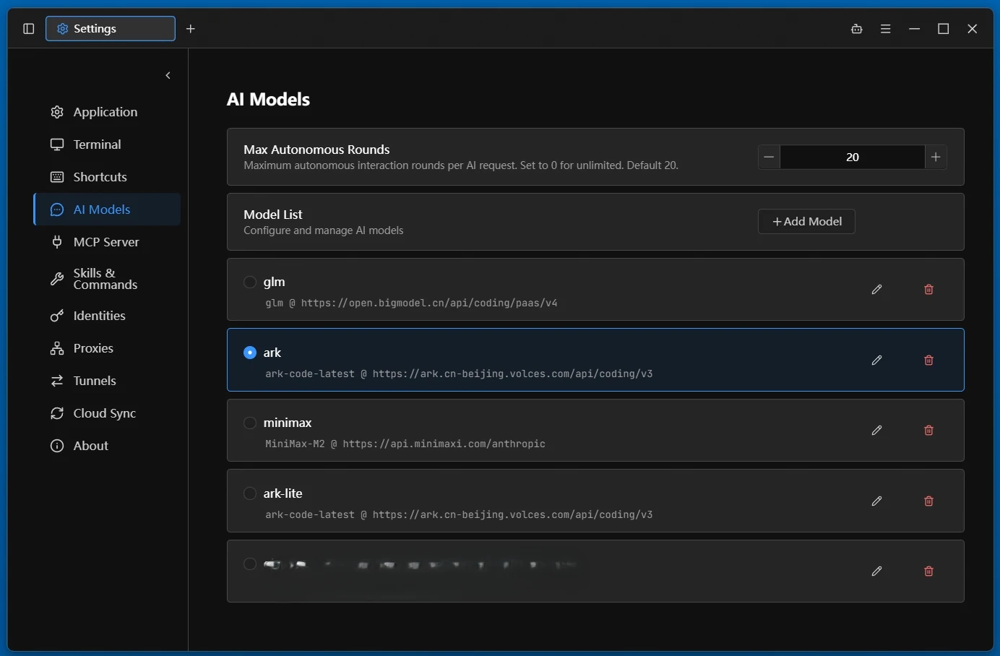

uniTerm
一站式终端，覆盖 30 余种协议
内置自主执行多轮命令的 AI Agent
Windows · macOS · Linux · Android · Docker
一站式终端，覆盖 30 余种协议
内置自主执行多轮命令的 AI Agent
Windows · macOS · Linux · Android · Docker
终端、文件传输、远程桌面、数据库、容器 —— 覆盖全部远程访问场景。


SSH / Telnet / Mosh 远程终端，PowerShell / Git Bash / WSL 本地终端与串口连接，服务器实时监控
SFTP / SCP / FTP / FTPS / SMB / WebDAV / S3 / Zmodem，双栏浏览、鼠标拖拽上传下载，SSH 内 `rz`/`sz`
RDP（Windows 远程桌面）、VNC（Linux 远程控制）、SPICE（KVM/QEMU 虚拟机）、X11（X Window 图形界面转发）
MySQL / PostgreSQL / Oracle / SQL Server / SQLite / rqlite / Redis / MongoDB / Elasticsearch，AI 自然语言生成查询与数据行编辑
Kubernetes / Docker / Podman / nerdctl (containerd) / WSLC，集群资源与容器镜像管理、Pod 日志与 exec 终端、CPU/内存指标
自主执行的 AI Agent，独立规划并执行多轮 Shell 命令，直接在终端中完成复杂任务。


AI Agent 自主规划并多轮执行命令，直接在终端完成复杂任务；兼容 Anthropic / OpenAI 协议，支持 Claude、GPT 等模型，四种执行模式自主权由你掌控
可复用的 Skill 工作流与 Prompt 命令模板，输入 `/` 即可触发，AI 也可自行沉淀新技能
外部 AI Agent 经 MCP 安全执行命令、传输文件，凭据不出应用
用自然语言描述查询需求，AI 结合表结构自动生成 SQL 并直接执行
输入时按历史命令与 AI 能力实时补全
连接管理、自由分屏、云端同步、主题与国际化 —— 你的终端由你掌控。


分组、搜索和批量管理服务器连接；加密导入/导出，支持从 MobaXterm、Xshell 等导入
将终端标签拖到内容区即可自由分屏，任意组合成工作区
网络扫描、SSH 端口转发隧道，以及为其他设备运行临时服务器的本地服务
Git / WebDAV / SFTP / S3 / SMB 加密云同步，多设备无缝接续，无惧丢失泄露
28 款终端主题、3 款界面主题、自定义背景图片，支持简中、英、日、韩等 11 种语言界面